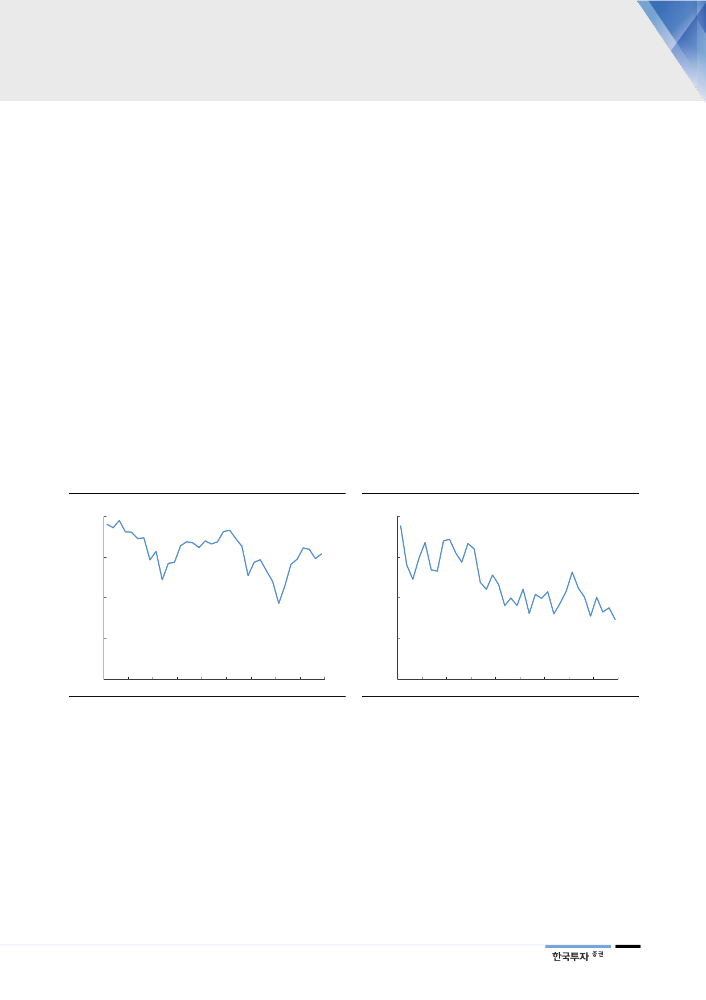

전력 패러다임 전환에서
기대되는 LNG 발전 수혜
신재생에너지 체제로 넘어가는 교두보로서 LNG 발전의 역할은 중요해질 것이다.
전력 공급의 안정성과 효율성을 감안하면 재생에너지는 갈 길이 멀어 보인다. 여
기에 원전이용률의 하락으로 한전의 수익성이 크게 악화되면서 탈원전에 대해서
도 속도조절의 필요성이 제기되는 상황이다. 장기적인 이상을 지속 가능하게 추
구하기 위해서 때로는 현실적인 고민 먼저 돌아봐야 한다. 원전과 석탄을 지양하
는 정책 방향성에 부합하면서 출력 변동성이 큰 태양광과 풍력 발전의 보조 에너
지로 적합한 LNG 발전에게 수혜가 예상된다.
단기적으로 LNG 발전
줄어드는 것으로 보이지만
물론 2023년까지는 여전히 기저발전이 늘어나는 국면이다. 신고리 4호와 신월성
1~2호 등 이미 건설중인 원전을 백지화하기는 현실적으로 어렵다. 최근 1년간
안전정비 문제로 원전이용률이 이례적인 수준으로 떨어졌던 탓에 단기적으로 발
전용 가스 판매량이 줄어드는 착시도 존재한다. 일부 원전에서 안전상의 결함이
발견된 까닭에 가동을 중단한 채 정비를 받아야 하는 기간이 작년 하반기 이후
크게 늘었다. 이에 따라 2010년대 초까지 90%를 기록했던 원전이용률은 올해 1
분기 57%까지 떨어졌다. 2분기 들어 정비일정이 일단락되고 원전이 하나둘 정상
가동되기 시작했다. LNG는 원자력보다 발전단가가 비싸 급전지시에서 후순위에
놓여있다. 원전 가동이 정상화되는 만큼 LNG 발전은 단기적으로 둔화될 것이다.
[그림 16] 원전가동률 이례적인 급락에서 2분기 반등
(%)
100
원자력 발전 가동률
[그림 17] LNG 발전 가동률은 단기 낮아질 가능성 존재
(%)
80
LNG 발전 가동률
80
60
60
40
40
20
20
1Q11
1Q13
자료: 한국수력원자력, 한국투자증권
1Q15
1Q17
1Q19F
0
1Q11
1Q13
자료: 한국전력거래소, 한국투자증권
1Q15
1Q17
1Q19F
장기 설비투자 확대기조가
가스공사 이익에 더 중요
하지만 가스공사의 이익은 단기적으로 천연가스 판매량이 줄더라도 크게 영향받
지 않는다. 설비자산에 대해 이익을 보장받는 수익구조에서는 장기적인 천연가스
수요에 대한 전망이 상향조정됨에 따라 제5기지 건설 등 설비투자 증가 기조가
더 중요하다. 가스공사는 연료비 연동제와 적정투자보수 산정에 있어 이익에 대
한 가시성이 높은 편이다. 그만큼 투자심리도 단기적인 판매량이나 연료비보다
중장기적인 수요 전망과 정책적 방향성에 더 초점을 맞추게 된다. 정부는 2031
년까지 천연가스 생산 및 공급 설비에 5.8조원을 투자할 방침이다. 이는 가스공
사의 요금기저 증가로 이어져 투자보수가 장기적으로 우상향하는 기반이 된다.
9